Construimos un pintógrafo de poleas para registrar figuras de Lissajous sobre papel y verificar, con distintas combinaciones de discos, la relación entre la razón de giros y la geometría de la curva.
Explorar ↓Construimos un pintógrafo, una variante del armonógrafo que en lugar de péndulos emplea dos discos que giran acoplados. Un brazo articulado une ambos discos y sostiene un trazador en el centro; al girar el conjunto a mano, el trazador describe una curva continua sobre el papel.
Trabajamos con tres discos: dos de 14 cm de diámetro, uno de 10 cm y uno de 7 cm. Combinándolos de a pares obtenemos distintas razones de giro: 1:1 (14 cm y 14 cm), 7:5 (14 cm y 10 cm), 2:1 (14 cm y 7 cm) y 10:7 (10 cm y 7 cm). Cada razón produce una familia de figuras distinta sobre el papel.
La razón entre los diámetros fija cuántas vueltas da un disco por cada vuelta del otro, y de ahí depende la forma resultante. Como el giro es manual y no partimos siempre desde la misma posición, la fase inicial cambia entre pasadas; el dibujo final es la superposición de esas pasadas. Eso es lo que documentamos en este laboratorio.
Todo se construyó a mano con materiales accesibles: madera para la base, cartón piedra para los discos, palitos de balso para el brazo articulado, silicona caliente, palitos de pincho como ejes, bisturí, regla y la mina de un lapicero como trazador. El conjunto se hace girar manualmente.
Tenemos dos discos iguales de 14 cm. Usados juntos dan la razón 1:1; combinados con los discos menores dan 7:5 (con el de 10 cm) o 2:1 (con el de 7 cm).
Combinado con un disco de 14 cm da la razón 7:5; combinado con el de 7 cm da la razón 10:7. Al ser menor, gira más veces por cada vuelta del disco grande.
El disco más pequeño. Con un disco de 14 cm da la razón 2:1 (una vuelta de uno por cada dos del otro); con el de 10 cm da la razón 10:7.
Diagrama del mecanismo. Los dos discos giran acoplados; el brazo articulado traduce ese giro en la trayectoria del trazador sobre el papel.
Materiales accesibles, sin equipo especializado. El montaje se acciona girando los discos a mano.
La respuesta corta: porque el trazador se mueve en dos direcciones al mismo tiempo, cada una controlada por uno de los discos. La posición del trazador en cada instante es la suma vectorial de esas dos contribuciones.
Si un solo disco moviera el brazo, el trazador describiría una línea. Pero el brazo articulado combina las dos rotaciones, y esa combinación produce una trayectoria en el plano con la forma matemática exacta de las ecuaciones de Lissajous:
Donde ω₁ y ω₂ son las velocidades angulares de cada disco, r₁ y r₂ son las distancias del brazo al centro de cada disco, y δ es la diferencia de fase inicial, que en la práctica depende de la posición en que quedan los discos al empezar a girar a mano.
La clave está en la razón ω₁/ω₂: si es un número racional simple (como 7/5), la curva se cierra y se repite. Si fuera irracional, el lápiz nunca volvería exactamente al mismo punto y llenaría el papel poco a poco.
Cuando dos discos giran acoplados, sus velocidades angulares son inversamente proporcionales a sus radios. Por eso la razón de giros queda determinada por la relación entre los diámetros de los discos que elijamos:
Con nuestros tres tamaños de disco (7, 10 y 14 cm) y combinándolos de a pares, obtenemos cuatro razones distintas:
Una figura de Lissajous con razón a:b tiene a tangencias con una línea horizontal y b con una vertical. Así, contar esas tangencias en el dibujo permite comprobar directamente qué razón se obtuvo.
Las razones simples (1:1, 2:1) cierran rápido y dan figuras limpias; las menos simples (7:5, 10:7) tardan más vueltas en cerrarse y producen curvas más densas.
Lo que las ecuaciones por sí solas no transmiten es ver la figura emerger sobre el papel a medida que se giran los discos: no es una simulación, sino cartón girado a mano produciendo una curva matemáticamente exacta. Cambiar un disco cambia la razón de giros y, con ella, toda la forma de la curva.
A diferencia del armonógrafo de péndulos, cuya figura decae en espiral al perder energía, aquí la curva se vuelve a recorrer mientras se siga girando. El aparato funciona, en el fondo, como un trazador analógico de ecuaciones: cada figura es la solución visual de un sistema de dos oscilaciones perpendiculares con una razón de giros fija.
Cada combinación de discos produjo una familia de figuras distinta sobre el papel. Al girar a mano, partiendo de posiciones diferentes en cada pasada, las trazas se acumulan: lo que se ve no es una sola curva, sino la superposición de muchas pasadas con fases iniciales (δ) distintas.
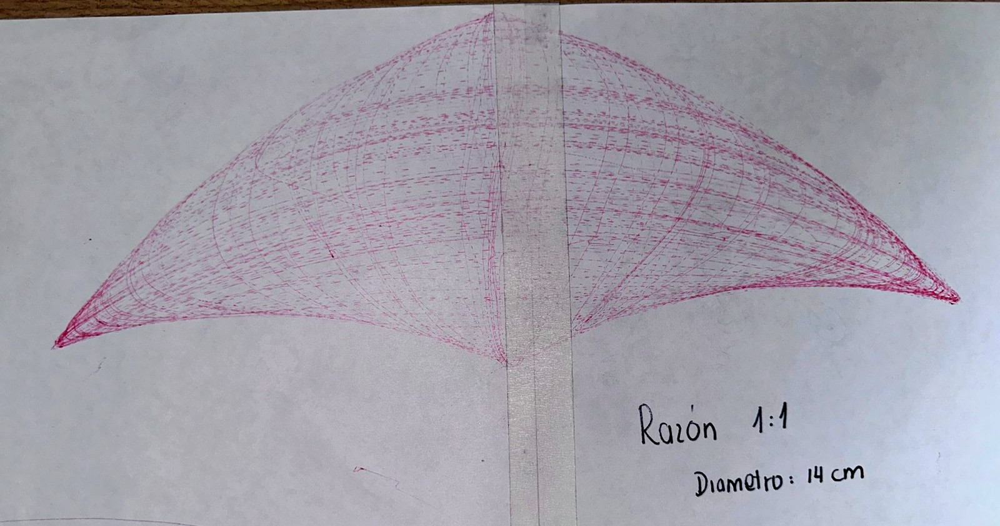
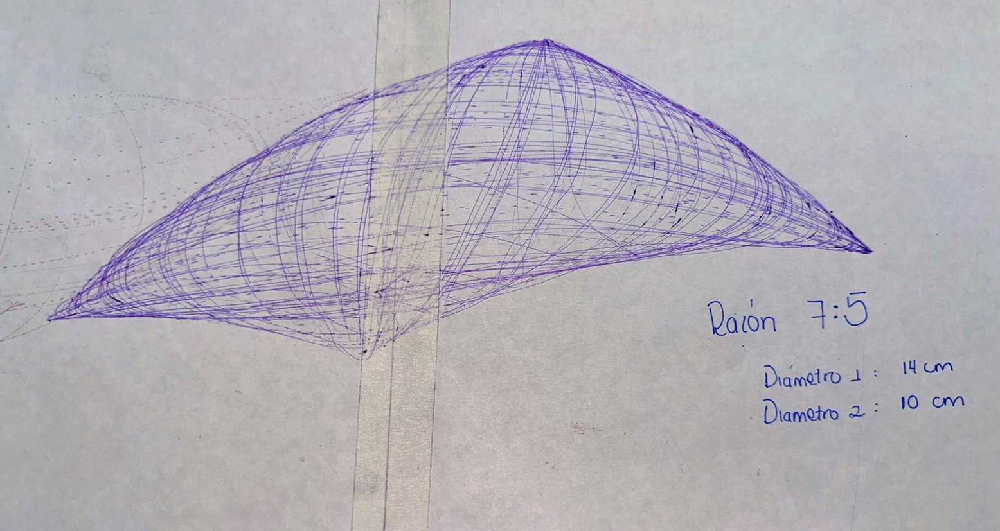
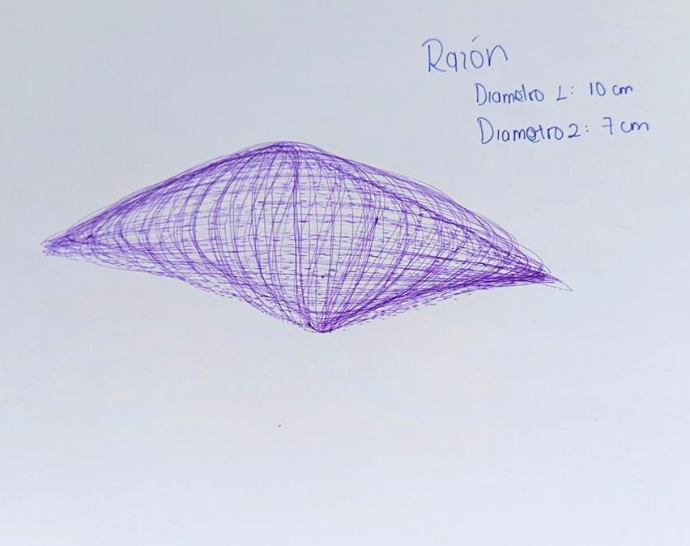
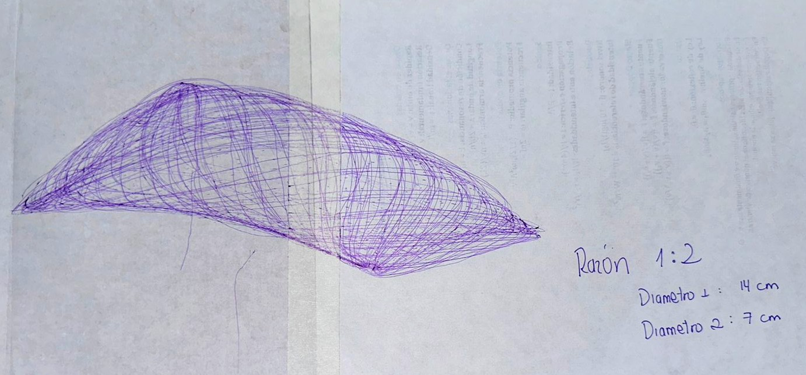
Grabamos el pintógrafo en funcionamiento y reconstruimos el movimiento del trazador frame a frame, sin herramientas de pago, usando solo OpenCV y NumPy. Analizamos dos configuraciones: la razón 1:1 (dos discos de 14 cm, 12 s) y la razón 7:5 (discos de 14 y 10 cm, 47 s). El método es idéntico en ambos casos; los pasos se ilustran abajo con la razón 1:1.
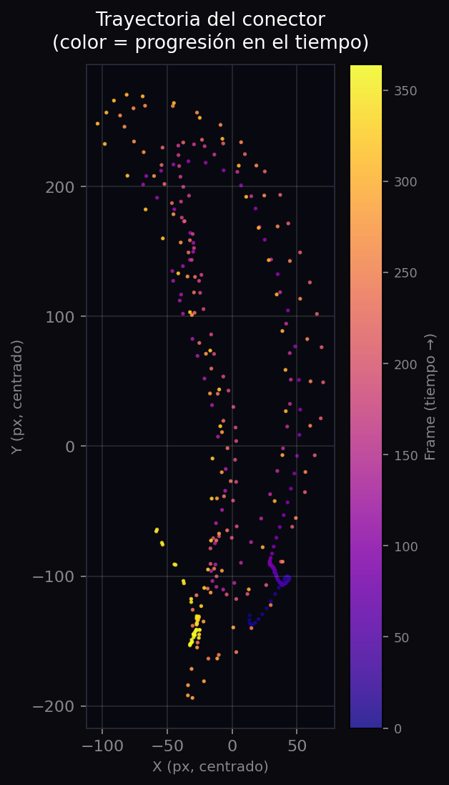
Cada fotograma se convirtió del espacio BGR a HSV — un espacio donde separar un color por tono (H) es independiente del brillo (V), lo que hace la detección más robusta ante cambios de iluminación. Se definió un rango HSV para el azul del conector y se generó una máscara binaria. Sobre ella se calculó el centroide del contorno más grande: esa es la posición del trazador en cada frame.
En la gráfica se aprecia que los puntos no forman una curva perfectamente única: el trazador recorre caminos ligeramente distintos en cada pasada. Eso es exactamente lo esperado con giro manual — cada vuelta parte de una posición angular (fase δ) diferente — y explica por qué el papel acumula muchas trazas superpuestas en vez de una sola curva limpia.
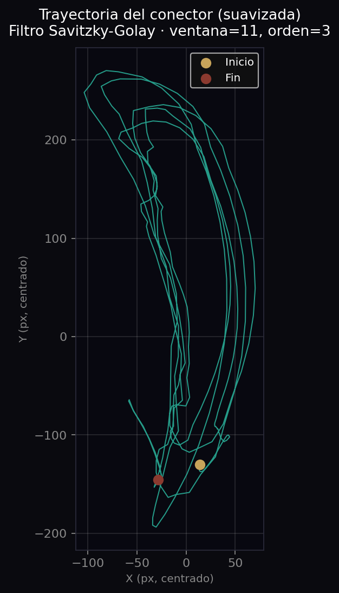
El ruido de detección se limpió primero con morfología: apertura (elimina píxeles aislados) y dilatación (engrosa el blob objetivo), con kernel 5×5. Luego se aplicó el filtro Savitzky-Golay a las series x(t) e y(t), que ajusta un polinomio local a cada ventana de puntos y suaviza sin el retardo ni el aplanamiento de picos que introduce un promedio móvil.
La trayectoria resultante revela la forma real del movimiento: un lazo cerrado orientado verticalmente. El punto dorado (inicio) y el rojo (fin) quedan separados por apenas unos píxeles, lo que confirma que no hubo deriva apreciable del encuadre durante los 12 segundos de grabación. La asimetría de amplitudes — eje Y mucho más largo que eje X — es la firma directa del brazo descentrado.
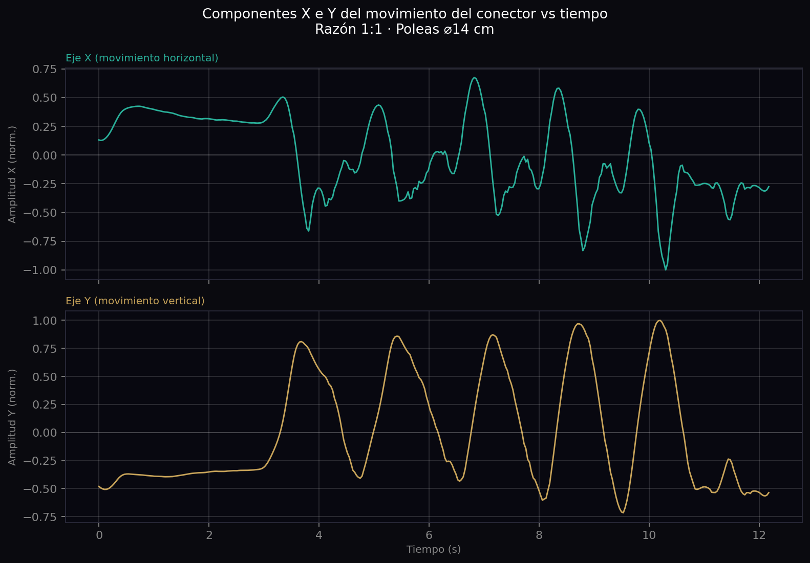
Separar el movimiento en sus componentes X(t) e Y(t) muestra dos oscilaciones aproximadamente periódicas, consistentes con el giro de los dos discos. Los períodos no son perfectamente regulares porque el giro manual hace variar la velocidad angular de una vuelta a otra.
Lo más visible es la diferencia de amplitud entre los dos ejes: el eje vertical (Y) oscila con bastante más recorrido que el horizontal (X). Esa asimetría sistemática es la firma del brazo descentrado respecto a los discos, y reaparece igual en el análisis de la razón 7:5.
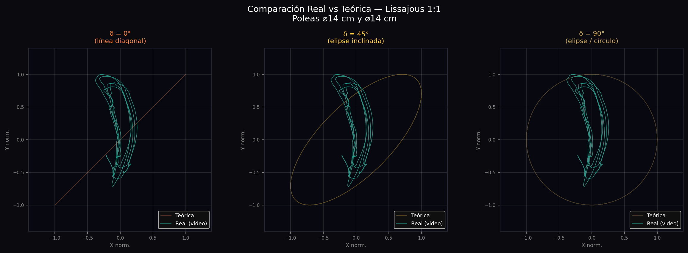
Esta es la comparación directa entre lo medido y lo que predice el modelo. Para razón 1:1 la figura de Lissajous teórica es una elipse cuya orientación depende por completo de la fase δ: con δ = 0° es una recta diagonal, con δ = 90° un círculo.
La curva real no coincide exactamente con ninguna de las tres, y la razón es que durante los 12 segundos los discos se giraron a mano partiendo de fases distintas en cada vuelta. La traza acumulada es la superposición de muchas elipses con δ diferente, que en conjunto producen el abanico observado en la figura sobre papel. Además se aprecia la compresión en X que ya señalaban las componentes: el brazo descentrado limita el recorrido horizontal.
Aplicamos el procedimiento completo a un segundo video, esta vez de la razón 7:5 (discos de 14 y 10 cm). El rastreo cubrió el 100% de los 1418 fotogramas (47 s), con un salto medio entre frames de 7,1 px y ninguno mayor a 20 px: una señal limpia y continua.
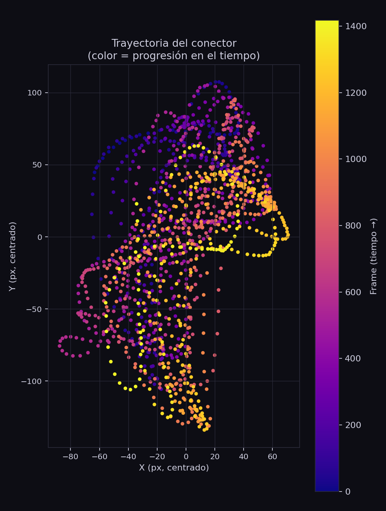
Con razón 1:1 el trazador repite el mismo lazo en cada vuelta completa. Con razón 7:5, en cambio, el ciclo completo requiere 7 vueltas del disco pequeño y 5 del grande — mucho más tiempo para volver al punto de partida. Durante ese tiempo el trazador recorre 35 posiciones distintas en el espacio (7×5), lo que crea una trama mucho más densa de caminos posibles.
La nube resultante es más compacta y uniforme que la del caso 1:1, donde se distinguían lazos individuales. El detalle de inicio y fin del registro — a pocos píxeles de distancia — confirma que no hubo deriva de cámara durante los 47 s. La asimetría Y > X vuelve a aparecer, con amplitud vertical ~1,5 veces la horizontal, la misma firma del brazo descentrado.
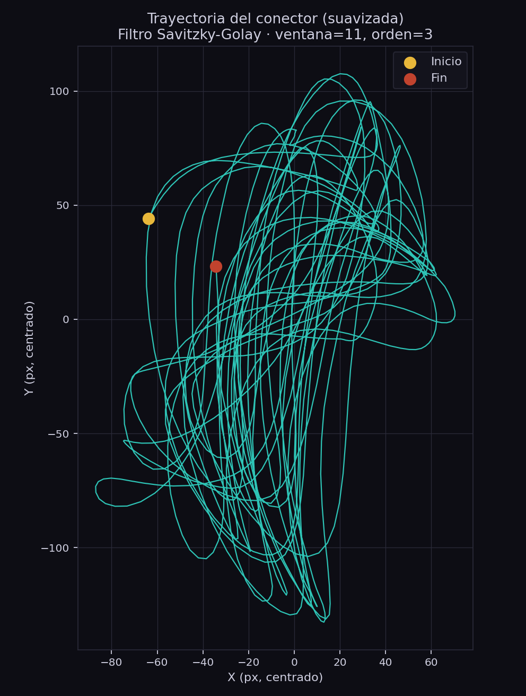
El suavizado conecta los puntos detectados en una trayectoria continua, eliminando el ruido de detección sin desplazar la forma. Lo que emerge es la estructura real del movimiento: muchas elipses encadenadas que rotan ligeramente entre sí, porque cada pasada arranca con una fase δ distinta.
A diferencia del lazo único y limpio del caso 1:1, aquí el haz es más tupido: la razón 7:5 necesita más vueltas para cerrarse, así que en 47 segundos se acumulan muchas más pasadas y la figura se densifica.
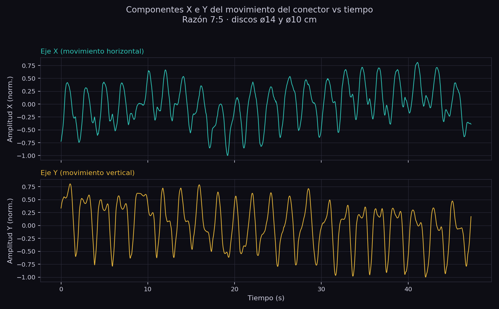
Separar el movimiento en sus componentes X(t) e Y(t) muestra dos oscilaciones aproximadamente periódicas, consistentes con el giro de los dos discos. Los períodos no son perfectamente regulares: como el giro es manual, la velocidad angular varía ligeramente de una vuelta a otra, lo que deforma la curva respecto al modelo ideal de frecuencias constantes.
La amplitud del eje Y supera a la del X en torno a un 50% (Ay/Ax ≈ 1,53), la misma asimetría que aparece en el caso 1:1. Esto confirma cuantitativamente que el brazo no quedó perfectamente centrado respecto a ambos discos: el movimiento vertical es más amplio que el horizontal de forma sistemática, no por azar.
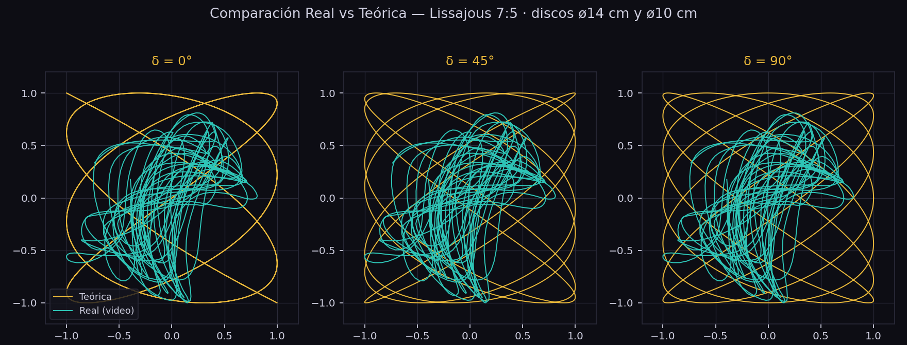
La figura de Lissajous 7:5 teórica tiene 7 tangencias con el borde horizontal y 5 con el vertical. Eso se ve claramente en la curva dorada: siete "puntas" arriba/abajo y cinco a los lados. La curva real reproduce esa misma topología — el ojo sigue los mismos lóbulos y cruces — aunque comprimida hacia el centro por el brazo descentrado y más densa por la acumulación de pasadas.
Este es el resultado más importante del análisis: sin haber impuesto ninguna restricción matemática al rastreo, la forma de la trayectoria detectada en el video reproduce la estructura topológica predicha por las ecuaciones de Lissajous para la razón exacta que imponen los diámetros de los discos (14 cm / 10 cm = 7/5). El pintógrafo, construido con cartón y silicona, está resolviendo físicamente ese sistema de ecuaciones.
Ninguna de las trayectorias reconstruidas coincide exactamente con la figura de Lissajous teórica, y eso es esperable: el aparato es manual y artesanal. Identificamos y, donde fue posible, cuantificamos las principales fuentes de error.
El factor dominante. Como cada pasada se inicia girando los discos desde una posición distinta, la fase δ cambia de una vuelta a otra. En vez de una sola curva cerrada, el papel acumula muchas elipses con δ distinto. Esto no es propiamente un "error de medición" sino la característica que produce el abanico observado, pero impide comparar contra una única figura teórica.
Efecto: superposición de curvas → figura en abanicoEl brazo articulado no quedó perfectamente centrado respecto a ambos discos, de modo que las amplitudes de los dos ejes no son iguales. Lo medimos directamente sobre la trayectoria: en ambos videos la amplitud vertical superó a la horizontal en torno a un 50%.
10:7 → Ay/Ax ≈ 1,47 · 7:5 → Ay/Ax ≈ 1,53Al girar a mano, la velocidad angular no es constante: se acelera y frena ligeramente en cada vuelta. Esto deforma la curva respecto al modelo, que asume ω₁ y ω₂ constantes. Se aprecia en las gráficas de componentes X e Y, cuyos períodos no son perfectamente regulares.
Efecto: períodos irregulares en x(t), y(t)Las uniones de balso y silicona tienen holgura, y la mina apoya sobre el papel con presión variable. A esto se suma el ruido de detección por video, que medimos comparando la señal cruda con la suavizada: resultó pequeño (media ≈ 1 px), confirmando que el grueso de la irregularidad es físico, no del rastreo.
Ruido de detección: media ≈ 1 px (p95 ≈ 2,5 px)En una de las tomas la cámara se reencuadró a mitad del registro, introduciendo desplazamientos aparentes de cientos de píxeles que no correspondían al trazador. Lo detectamos por los saltos bruscos entre frames y restringimos el análisis al segmento de cámara estable. Es un recordatorio de la importancia de fijar la cámara.
Criterio: descartar saltos > 40 px entre framesEl seguimiento se basa en segmentar el azul del trazador en espacio HSV. Cuando había otros objetos azules en la escena (un segundo brazo, un estuche), el contorno de mayor área podía saltar entre ellos. Lo resolvimos siguiendo el blob más cercano a la posición previa, lo que dio un seguimiento continuo (100% de frames detectados).
Solución: seguimiento por continuidad temporalLas cuatro combinaciones de discos (14+14, 14+10, 14+7, 10+7) produjeron cuatro familias de figuras distintas y reconocibles en el papel. En el análisis de video, la curva real de la razón 7:5 reproduce las 7 tangencias horizontales y 5 verticales que predice el modelo sin ningún ajuste manual: la geometría del trazo está gobernada exclusivamente por la razón entre diámetros. Eso verifica experimentalmente que la transmisión por correa convierte la razón de radios en razón de frecuencias de giro tal como predice la mecánica.
El análisis de video demuestra que las componentes X e Y del movimiento del trazador son dos oscilaciones aproximadamente periódicas y perpendiculares, lo que es exactamente lo que describen las ecuaciones x(t) = r₁·sin(aωt + δ) e y(t) = r₂·sin(bωt). El mecanismo de cartón y silicona está integrando esas ecuaciones en tiempo real y dejando su solución impresa en el papel. No se trata de una analogía: es la misma física.
Al girar a mano, cada pasada arranca desde una posición angular distinta, lo que cambia δ. Para razón 1:1, δ determina por completo si la figura es una recta (δ = 0°), una elipse (δ = 45°) o un círculo (δ = 90°). La figura real en el papel es la superposición de todas esas curvas intermedias, de ahí el abanico triangular. Este comportamiento no es un defecto del aparato: es la demostración más directa de que el parámetro δ existe y tiene efecto real sobre la figura.
En ambos videos analizados, la amplitud vertical del movimiento supera a la horizontal en aproximadamente un 50% (Ay/Ax ≈ 1,47 en el caso 10:7 y ≈ 1,53 en el 7:5). Esta asimetría es consistente entre experimentos y está directamente cuantificada en las gráficas de trayectoria suavizada. No es ruido aleatorio sino una desviación sistemática atribuible a que el pivote del brazo articulado no quedó centrado equidistante entre ambos discos. En un montaje motorizado y ajustable, este parámetro sería el primero a corregir.
La diferencia entre la señal cruda y la suavizada (ruido de detección ≈ 1 px, percentil 95 ≈ 2,5 px) es órdenes de magnitud menor que las desviaciones respecto al modelo teórico (decenas de píxeles). Eso demuestra que el método de rastreo por color en espacio HSV funcionó correctamente y que las discrepancias observadas son inherentes al montaje manual: velocidad variable, brazo descentrado y fase inicial cambiante. El método es lo suficientemente preciso para este experimento y podría aplicarse sin modificación a versiones mejoradas del aparato.
El experimento demostró que la cadena completa — construir el aparato con cartón, madera y silicona, grabar con un celular, procesar con Python libre — es suficiente para pasar de un dibujo sobre papel a una verificación cuantitativa de las ecuaciones de Lissajous. La cobertura de detección fue del 100% en el video de 7:5 y del 94% en el de 1:1. La comparación directa entre trayectoria real y malla teórica 7:5 cierra el ciclo: lo que el modelo matemático predice, el aparato artesanal lo produce.
La composición de dos oscilaciones perpendiculares no es exclusiva de nuestro pintógrafo: aparece cada vez que dos movimientos periódicos se superponen, desde señales eléctricas en un osciloscopio hasta vibraciones en una estructura. En todos esos casos, la forma resultante codifica la relación entre las dos frecuencias. Lo que hicimos con cartón y discos girados a mano es una versión tangible de ese mismo principio: leer una razón de frecuencias a partir de una figura.
Explora las figuras que puede trazar el pintógrafo. Los presets corresponden a las combinaciones de discos que usamos; también puedes ajustar cada parámetro manualmente.